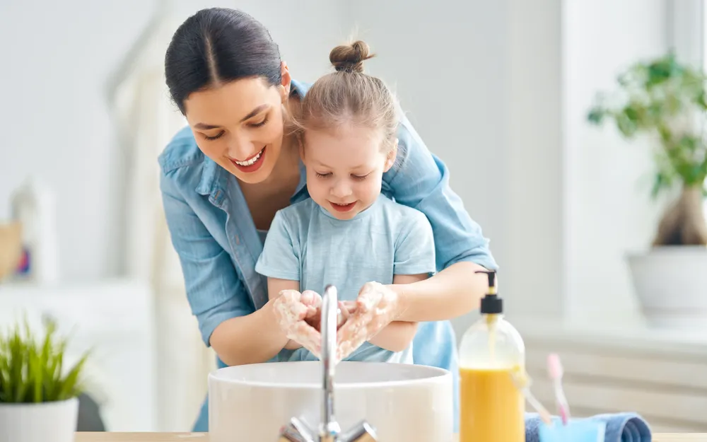

Creative Ways to Teach Kids About Handwashing

Handwashing isn’t exactly the idea of a good time for kids. After all, even adults can find it tedious, but we know exactly why it needs to be done – to reduce the spread of germs that can cause illnesses, and to wash the grease stains off our fingers before we pick up that slice of pizza.
You can’t always be in the room with your child to recite the reasons they need to wash their hands, so it’s best to show them why to make it part of their routine and how to make it (somewhat) enjoyable at the same time. Here are some ways to teach your kids proper handwashing technique in a fun sort of way…
Get Into The Science Of It
Most kids think science is cool. If not, there are ways you can get them more interested in science. How does this relate to handwashing? Well, you can explain to them that germs are so small they can’t be seen with the naked eye, and can only be spotted through a microscope, notes Care.com .
This way, even if your child shows you their “clean” hands and says they don’t need to wash, you can tell them there are still potentially bacteria and viruses that could make them sick. Want to go a step further? Show your kids what germs look like under a microscope – you don’t need the actual equipment, you can just show them magnified images online.
Use Printed Visuals
While you’re not there in the bathroom to direct them, you can be there in printed form. What? Well, what we mean is that you can do what some schools are already doing, and actually print out the steps for handwashing and post them on a wall.
GrowingHandsOnKids.com calls them “visual cue cards” for handwashing (and even offers a free download of them if you don’t want to make your own). But with a little imagination and personalization (such as putting your kids’ names on the printout or familiar faces), you can easily remind them how to get their hands clean without having to say a word.
Make It Glittery
This technique from Brainpop Educators is more directed at helping teachers ensure their students are properly washing their hands in a classroom setting, which will come in handy if kids have returned to school .
The glitter method shows kids how easy it is to transmit germs on hands from touching. The site suggests to educators to cover some students’ hands in glitter or flour and then ask them to shake hands with their classmates, who then shake hands with at least two others to illustrate how much of it gets passed on. Then have the students with the flour/glitter do the same thing after washing their hands to show the difference, it adds. At home variation: sprinkle a bit of glitter on your child’s hands and see how much is washed off with water alone and then with soap and water, suggests Care.com.
Put It To Music
Many people sing while they’re in the shower, so why not extend this to handwashing? It turns out the Centers for Disease Control and Prevention (CDC) already has this covered, sharing a “ happy hand washing song ” for your kids to learn when they’re scrubbing between their fingers.
Not only does the song (set to the tune of “happy birthday”) teach kids why and how to wash their hands (hint: to keep germs away by using soap), but it also helps with timing: singing it through twice is the recommended length of time to spend washing hands, it adds.
Help Them Make Scents Of It All
VeryWell Family has a suggestion to help motivate your kid to reach for the soap after using the bathroom (or before digging into dinner.) It suggests buying “funny, fruit-smelling soaps” (it doesn’t have to specify antibacterial, a type that has actually raised some concerns ) that can enhance their hand washing experience.
You can also find soap that features their favorite cartoon or animated characters that can help remind them to scrub. It notes that it shouldn’t be difficult to find these kinds of products at a drugstore in your neighborhood.
Show Them The Way
If your kids see you washing your hands while whistling a tune, then they might be more inclined to join in. Stanford Children’s Health says you should lead by example and “practice what you preach” when it comes to hygiene.
It reminds adults – not just kids – to wash hands when you’re about to eat (and before preparing food), as well as after using the bathroom or playing or working with their hands. It says parents should have some patience for their kids to get the hang of it. One way to achieve this is to wash your hands together, so they can mimic the proper techniques .
Source: https://activebeat.com/your-health/children/fun-tips-on-how-to-teach-kids-about-handwashing/